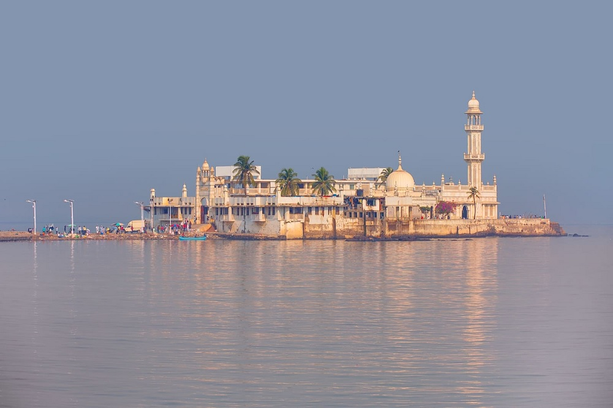

Mumbai, the capital city of the Indian state of Maharashtra, is a spectacular paradox of chaos and hope, glamour and squalor, modernity and tradition. Famously known as the City of Dreams, Mumbai formerly known as Bombay - Mumbai is a beautifully blended melting pot of cultures and lifestyles.
The city soaks in everything into its fabric, making it its very own. From upcoming actors struggling to make it big on the silver screen; from Bolly superstars to big industrialists to tribes of fisherman and slum dwellers, Mumbai is a city that proudly boasts of stories from different walks of human survival.
One of the main centres in the country of art, culture, music, dance and theatre, Mumbai is a dynamic, cosmopolitan city that has been running for years solely on the indomitable spirit of the Mumbaikars.